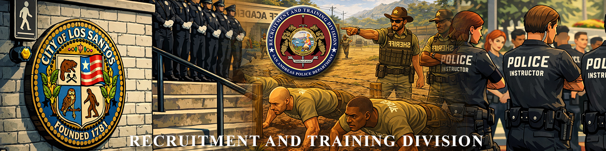
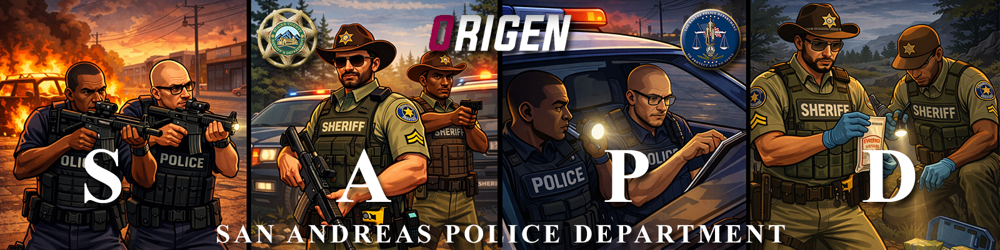

Nosotros
Recruitment and Training Division

SOBRE NOSOTROS
La Recruitment and Training Division tiene como función principal formar, entrenar, evaluar, certificar y controlar técnicamente al personal policial en etapa de academia, patrullaje formativo y consolidación operativa. En términos prácticos, la RTD funciona como el filtro técnico del SAPD: determina si un agente posee los conocimientos, criterio operativo, disciplina, actitud institucional y aptitud necesaria para avanzar dentro del cuerpo.
NUESTRA MISIÓN
La misión de la Recruitment and Training Division es formar, entrenar, evaluar y certificar objetivamente al personal policial del San Andreas Police Department, garantizando que cada oficial en etapa inicial o de consolidación operativa alcance los estándares doctrinales, técnicos, disciplinarios y éticos necesarios para ejercer funciones policiales con legalidad, profesionalismo, criterio operativo y excelencia institucional.
FUNCIONES CENTRALES
- Formación académica
- Entrenamiento operativo evolutivo
- Evaluación objetiva del rendimiento
- Intervención táctica
- Certificación de aptitud policial
- Control disciplinario y auditoría
VISIÓN
Consolidarse como una división técnica ejemplar dentro del San Andreas Police Department, reconocida por garantizar procesos formativos y evaluativos justos, trazables, meritocráticos y orientados a la excelencia operativa e institucional.

REQUISITOS DE INGRESO
- Ser Oficial II / Deputy Sheriff I en adelante.
- No poseer sanciones por parte de Asuntos Internos de manera reciente o activa.
- Tener vocación para la formación y enseñanza.